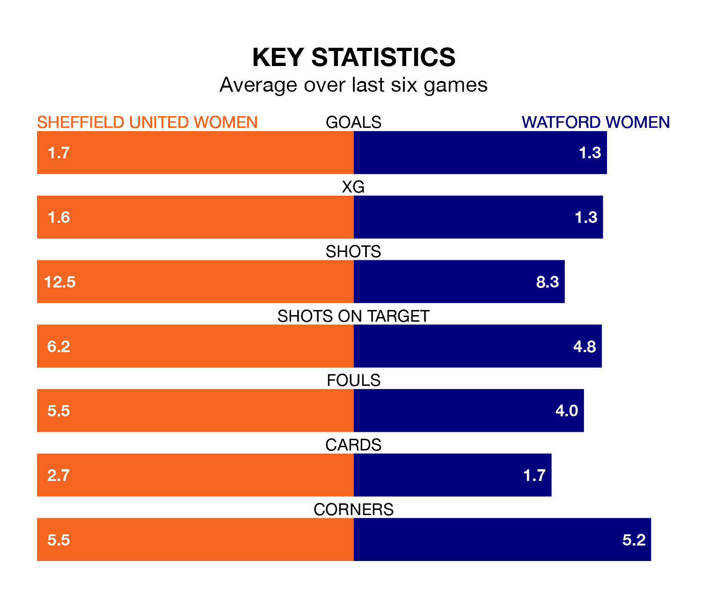

Struggling Watford Women face Sheffield United Women away at Bramall Lane on Sunday looking to build on a win in their last league outing.
After securing all three points with a 2-0 victory over Birmingham City Women on February 4, Watford sit 11th in the FA Women's Championship.
They travel to play a Sheffield United side eighth in the standings, who also won their last match, 5-2 against Durham Women.
In Isobel Goodwin, Sheffield United have one of the league's most on-form strikers so far this season. She has notched 10 goals in 13 appearances, to sit second in the scoring charts.
Her goal rate of one every 111 minutes is quicker than that of Carly Johns, Watford's top scorer with a goal every 195 minutes, and a total of six goals in 15 games.
With 18 goals in 15 games so far this season, the away team are scoring at below the league average rate with 1.2 goals per game. And they are conceding more than average, letting in 30 goals at a rate of 2.0 per game.
The Blades, meanwhile, are above average scorers, with 1.4 goals per game, compared to a league average of 1.3. They have conceded 1.6 goals per game.
The hosts are in mixed form in the FA Women's Championship, with two wins and a draw from their last six games.
With two wins and two draws over that period, Watford's form is slightly better – they have taken eight points from 18, compared to Sheffield United's seven.
In the last three years, Sheffield United and Watford have played each other on three occasions. Sheffield United won all of them.
Their last meeting was on November 19, when Sheffield United won 3-1 away.
Updated: 11:47 (UTC), 05/02/24